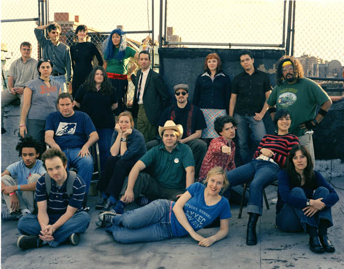
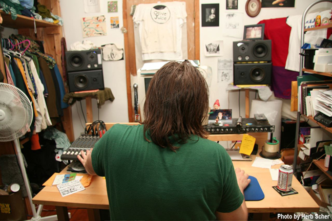
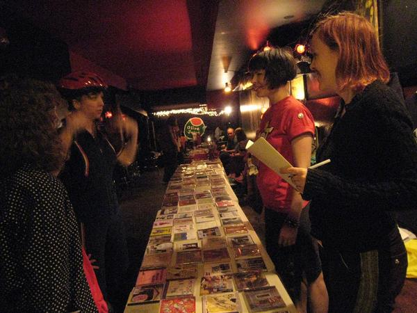
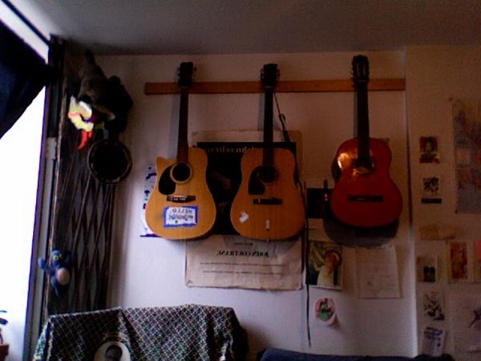

History
 
Olive Juice Music is a D.I.Y. online music hub. At various points in the past, present, or future we have been, are, or will be: a music label, a recording studio, a concert promoter, a mail-order distributor, and an activist community forum. We are interested in helping people, who are in the developmental stages of trying to do something with their art, connect with people who are in the developmental stages of appreciating it. OJM is not a traditional record label. For the most part it is a testament to what one guy, working out of his apartment, with a lot of help from his friends, can do. Olive Juice is about all of the riches that come from making art with friends. The artists associated with Olive Juice Music take an active part in how their art is produced, financed, and commodified. They in turn receive more of the direct profits gained from the distribution of that art, which is how it should be. The strength of OJM relies upon the participation of its members to share resources and help promote a communal spirit among everyone involved, as well as claiming responsibility for taking their art to wherever they would like it to go. Olive Juice Music is about independence and community. It is about beating back the hounds of commerce a bit and focusing on the inherent powers of art and the creative process.
 
1998-99:
Major Matt had a dream. A dream of joining forces with other like-minded musicians to get their music to more places than just their backpacks and bedrooms. The dream called Olive Juice first took shape in 1999, shortly after Matt recorded his first cd, Me, Me, Me, with fellow songwriter and recording engineer Tom Nishioka. He started chatting with Tom about the possibility of creating a collective/label called Olive Juice and involving both Matt & Tom's musical projects.
Nan came into the picture in the spring of 1999, after she caught wind from Jon Berger to check out this Major Matt fellow. She saw his show one nite at the Sidewalk Cafe and asked him out a short while later, thinking to herself, "What a catch. Schwervon! began soon after she and Matt began dating, and that became another band to include in the Olive Juice roster.
At this time, Matt was working at a post-production house, editing sound for commercials. He was able to use their studio at night to mix the first Schwervon! record, and also to record the debut Prewar Yardsale record, Lowdown. Mike Rechner had been playing solo for a while but had starting incorporating his wife Dina into the songs, playing buckets and singing. Prewar Yardsale was one of the first projects Matt recorded and it whet his appetite to make some changes. He quit his job at the end of 1999 to do freelance sound engineering and to devote more time to his music and the engineering of musicians. Tom Nishioka helped put up the first Olive Juice website, along with Chris Hart's help later (who has since moved to Paris). Prewar Yardsale, Schwervon!, Major Matt Mason, and Tom Nishioka (and his project Never Louder Than Lovely) were the first Olive Juicers. Soon Randi Russo, American Anymen, and Derek Richmond were welcomed into the OJ family too.
2000:
In the beginning they would meet monthly and have snacks and they even had a dues system and would use the money to take out ads in indie rags together. They helped each other get some press and they talked about the Olive around town and at parties. Somewhere around that time Toby Goodshank (of the Moldy Peaches) joined the team, and Peter Dizozza too.
They began having cd release parties & Olive Juice shows at Sidewalk Cafe and Galapagos and other NYC/Brooklyn venues and a community was slowly being created--though a lot of the acts met and were friends already through the antifolk scene and the Sidewalk Cafe.
2001- early 2002:
The team Olive decided that getting people together for monthly meetings was too difficult because of busy schedules and it was taking a lot of time to make simple decisions because they had to wait for collective agreement. They let Matt take the reins of Olive Juice as Executive Decision Maker. All of the artists were still promoting the label in various ways, but were free to act independently in regards to their music without checking in with the whole group.
After Matt was appointed Executive Decision Maker, he ended the dues system, and began to sell other musicians' stuff off of the site, on the On-Line Distribution Page... not just the people officially "on" the Olive Juice Label. This helped foster even more of a sense of community, not to mention the growing fascination of opinions expressed on the OJ Message Board. Income would be generated on a consignment basis and the famous 70/30 artist split was created with OJ taking 30% off of the retail price of any item sold.
Matt released an Antifolk compilation cd entitled Call it what you want with a slew of musicians in the immediate community and one who was far away, Daniel Johnston.
2002-2003:
Nan Turner (solo) & Pantsuit, & American Anymen were added to OJ. Prewar Yardsale, Major Matt, Randi Russo, Toby Goodshank, and Schwervon! all were taking periodic trips to the UK and Europe. Mike and Dina had a baby named Harmon Gillespie Levy Rechner.
2004:
Knot Pinebox and Secret Salamander were added to the OJ artist pages. Major Matt tours the UK with his sister. Knot Pinebox moves to Seattle. Schwervon! tour europe with Kimya Dawson. Matt's recording business picked up momentum ensuring that he didn't have to do freelance commercial editing anymore. OJ becomes a hotbed of new talent and added more artists to their pages: The Babyskins, Dream Bitches, Kansas State Flower, Snap Pusher, Double Deuce, and The Wigg Report.
2005-2006:
January 1st Olive Juice Music launches a brand new website designed by Yoko Kikuchi. OJ radio, a periodic streaming Internet radio show of Real Independent Music, begins soon after. Several OJ artists tour Europe. The OJ Messageboard evolves into a community resource as well a center for discussion of topical subjects, philosophy, and good old fashioned gossip.
The OJ Vol. 2 CD is released and OJ distro's profile is amped by carrying the complete comic book works of Jeffry Lewis as the Distro catalogue continues to grow.
OJ begins hosting regular live music nights in NYC's Lower East side at Bar 169 and in 2006 at The Cake Shop.
2007:
The first annual OJ All Day festival takes place at The Cakeshop on May 19th featuring 20 live performances on 2 stages by various artists associated with the Olive Juice Music community.
Dave End joins the Olive Juice Music family with the release of his latest album Fruits Commonly Mistaken For Vegetables and chips in with some much needed help around OJ Headquarters.
The first issue of Elephant Shoe (a zine by Olive Juice Music) is born.
2008:
Business as usually at OJ Headquarters. The Distro adds great new releases by local NYC artists: Ching Chong Song, Liv Carrow, Barry Bliss and Stolen Brown Evergreen as well as our friends from across the pond Scotland's: Withered Hand and Berlin based: Stanley Brinks. OJ Studios gives birth to notable albums by Huggabroomstik, Toby Goodshank, Brook Pridemore and a compilation of cover songs by the 80's Britsih Punk band Crass by Jeffrey Lewis.
The 2nd Annual OJ ALL Day returns to The Cakeshop adding a second afternoon of free acoustic acts and an all day DIY craft fair along with a free book and clothing swap.
2009:
The 3rd annual OJ ALL DAY moves to The Brooklyn Lyceum and spans nearly 2 full days. Including over 30 acts the fest also features 10 craft tables of local DIY artists and bakers as well as legendary feminist book store Blue Stockings. There is also a featured local tattoo artist and massage table.
Thanks to a very generous barter agreement with Mr. Dibson Hoffweiler, construction begins on a new website rumored to feature a fully cross referencing search engine and a daily blog. New albums by: Schwervon!, Toby Goodshank, Rachel Trachtenburg, Huggabroomstik, Cy and Caito, Dufus, Ray Roumors, The Baby Skins, Jack Lewis, Woog Riots and more are featured on the distro.
2010:
Juice Box #1 takes place at Scapegrace. OJ gets it's first Summer intern: Solena Toussaint. The 2nd issue of the OJ zine "Elephant Shoe" is released. The new OJ website finally goes live. The New OJ forum takes over the old subscription messageboard. The OJ Blog becomes a another place for artists to feature photos and longer format essays and reviews outside of any corporate connections or sponsorship.
2011
For half the year, Juice Box, grows into a monthly music night, taking place at the Sidewalk Cafe the last Tuesday of every month. Performers include American Anymen, Dan Fishback, Flare Acoustic Arts League, The Happy Rappies, Schwervon! and more talent than you can shake a stick at. OJ website subscribers tops 500.
2012
In early 2012 Olive Juice Music closes it's Distro/Store Section and moves it's home headquarters from New York to Kansas City.